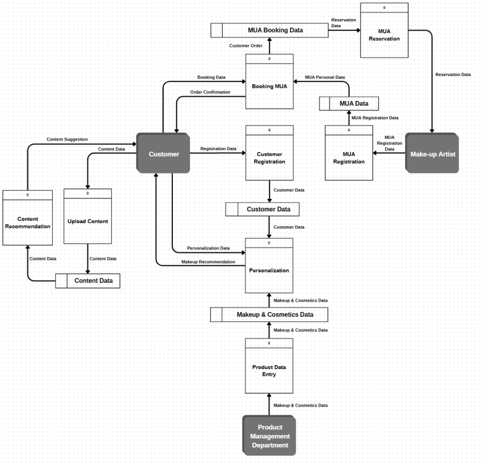
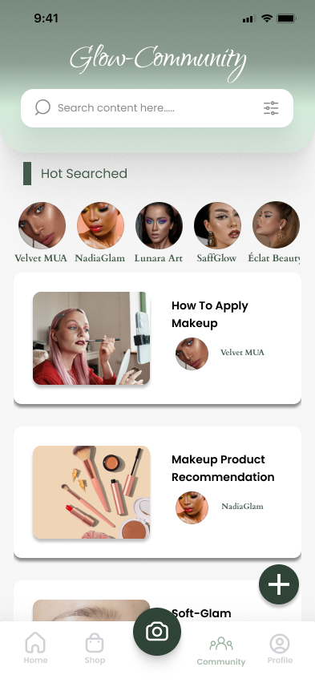
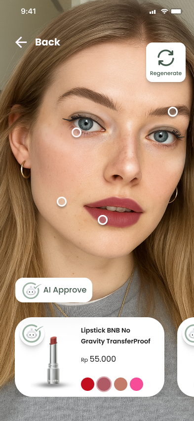
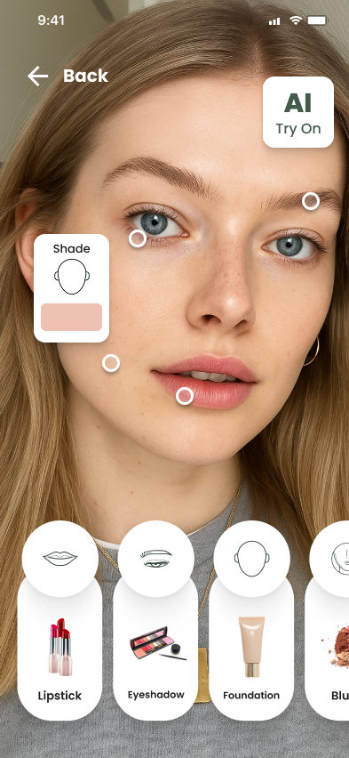

GlowMate: AI Beauty Ecosystem
An integrated mobile application concept designed to bridge consumers, professional Make-Up Artists (MUA), and beauty brands through AI-powered skin personalization and virtual try-on.
1. The Challenge & Opportunity
Consumers often struggle to find cosmetic products that match their unique skin tone and undertone when shopping online due to the inability to test products physically. Additionally, there was a lack of a centralized ecosystem connecting beauty enthusiasts, content creators, and professional MUAs.
2. System Analysis & Modeling
To tackle the core problems, we mapped out root causes using a Fishbone Diagram and established functional requirements through Data Flow Diagrams (DFD Level 0) and Use Case Diagrams.

Figure: DFD Lvl 0
3. UI/UX Design & Key Features
The interface was structured around a clean, intuitive user journey focusing on three main pillars:
- AI Face Scanning & Personalization: Mapping 68 facial landmarks to analyze skin tone and provide tailored cosmetic recommendations.
- Virtual Try-On: Enabling users to test lipstick, eyeshadow, and foundation shades digitally before purchase.
- MUA Booking & Community: Transparent schedule selection, portfolio exploration, and secure payment handling.

AI Facial Scan & Try-On

MUA Booking System

Beauty Community
4. System Architecture & Management
The application relies on a robust Three-Tier Client-Server Architecture and an Agile Development strategy to handle scalable AI data processing, secure user authentication, and third-party API integrations.